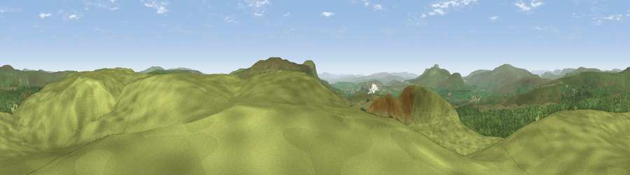

Viewpoint c9565_7675
#4388 in England · top 7% of its area beats it · —Where it is
The exact computed spot (SD 83575 78175). Click the marker for map links.
The view, rendered

A 360° render of this exact spot computed from the terrain model, tree cover and land cover — summer colours, afternoon light, calibrated against photographs of famous viewpoints. Real trees, hedges and buildings will differ in detail.
The panorama
Grey silhouette: terrain skyline in each direction (720 bearings, Earth curvature and refraction included). Dashed green: skyline with trees (+15 m) and buildings (+8 m) as obstacles. Blue strip: how far the ground is visible on each bearing.
Where the view opens
Wedge length = distance to the farthest visible ground on that bearing (vegetation-aware). Rings at 10, 25 and 50 km.
What fills the view
72% grassland · 27% woodland
Angular shares of the visible panorama (visual magnitude), not map area. Landscape diversity 0.26 (0–1 Shannon).
Key numbers
More beautiful places nearby
The staircase of upgrades: each row has a higher view potential than everything closer. Driving times are estimates from straight-line distance, calibrated against real road routing — check an actual route before setting out.
| Place | Direction | Drive | Score |
|---|---|---|---|
| Viewpoint c9559_7667 | SW · 0 km | ~1 min | 73.3 |
| Pen-y-ghent | S · 5 km | ~11 min | 75.8 |
| Viewpoint near Ingleton | WSW · 10 km | ~20 min | 79.5 |
| Whernside | WNW · 10 km | ~20 min | 79.9 |
| Warton Crag | W · 35 km | ~53 min | 83.2 |
| Viewpoint near Grange-over-Sands | W · 44 km | ~64 min | 83.4 |
| Viewpoint near Finsthwaite | WNW · 46 km | ~66 min | 90.3 |
| The Knoll | S · 391 km | ~376 min | 91.0 |
54.19906, -2.25327 · source: screening · position refined by local search. Computed location — check access rights before visiting.